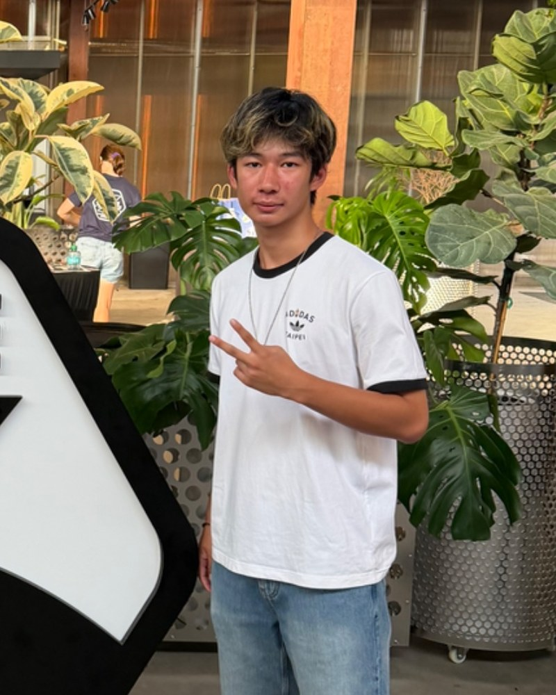
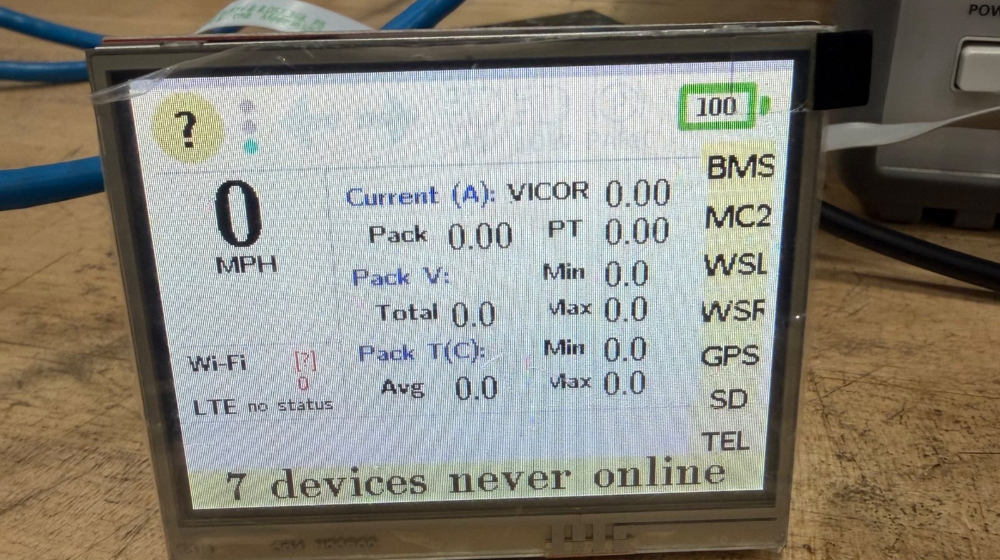

Alex Miyazawa
Electrical Engineering · Georgia Tech · Class of 2030
Welcome! I'm a first-year Electrical Engineering student at Georgia Tech pursuing the Circuit Technology and Electronic Devices threads. I'm especially interested in chip design and the semiconductor industry, and I'm currently building hands-on hardware and firmware experience as a member of the Georgia Tech Solar Racing team.
Looking ahead, I plan to get involved in undergraduate research and pursue internships so I can apply what I learn in class to real engineering problems and build a long-term career in electrical engineering.

Projects
-
 Discovery Project · Fall 2026
Discovery Project · Fall 2026Arduino digital alarm clock
My first project of my own. It's a digital clock with an alarm, running on an Arduino Nano. I wrote the firmware as a state machine, tested it in the Wokwi simulator, and I'm now wiring it up on a breadboard.
Arduino · C++ · Wokwi · DS1307 RTC · TM1637 display · GitHub -

Solar Racing · Fall 2026Display board firmware
A partner and I updated the driver display firmware for Halo, the team's new car, and tested each change on the bench with CANalyzer.
C · TI Tiva · CAN bus · CANalyzer -
 Solar Racing · Fall 2026
Solar Racing · Fall 2026Analog sensor board
I assembled an analog sensor board from a bare PCB, then tracked down every bad joint and wrong part with a multimeter and the KiCad layout.
Solder paste · Reflow oven · Hand soldering · KiCad · Multimeter
Contact
Email is the best way to reach me: hmiyazawa6@gatech.edu. You can also find me on LinkedIn.